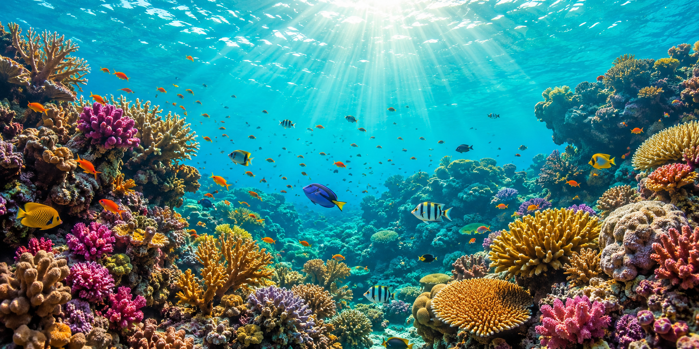

A C1 adult lesson for Andrew — the same ETS Updated TOEFL iBT 2025 frame, but this time every reading, listening, speaking and writing block runs through summer academic terrain: climate change, seasonal economics, sun science, tourism, seasonal migration, ocean warming, heat physiology. Plus a dedicated «As It Seems» hedging block — seemingly · apparently · it appears that · one might argue · to a certain extent — the register that separates band 5.0 from 4.5.
Three formats — open questions, agree/disagree, true/false. Take a position out loud, then justify it. Whole section → homework.
Practical, transferable, TOEFL-friendly. Ten adjectives that instantly move you from B2 to C1 the moment a native asks «how's the weather over there?». Match adjective → the exact feeling it names. Whole section → homework.
Sixteen high-frequency C1 words and collocations that Andrew can carry into any TOEFL topic, any academic essay, any business discussion. Not «summer trivia» — the register that separates band 4.5 from band 5.0. Tap a card for meaning + example.
Read the passage carefully. Choose the most appropriate title — one option only. Whole section → homework.
In recent decades, epidemiologists have documented a striking pattern across Southern Europe: heat has quietly overtaken cold as the leading weather-related cause of excess mortality. A large 2023 Lancet study estimated that more than 61 000 people died from the 2022 European summer heatwaves — a figure that would have seemed almost unthinkable a generation ago.
However, the impact is uneven. Elderly residents in dense inner-city neighbourhoods, where the urban heat island effect intensifies night-time temperatures, are far more vulnerable than younger populations in rural areas. Chronic cardiovascular and respiratory conditions are often the underlying cause; heat is the trigger.
Public-health experts increasingly argue that summer heat should be treated as a permanent infrastructure problem, not an occasional emergency — requiring cool centres, shaded transit and building retrofits, rather than short-term warnings alone.
Why has heat overtaken cold as the leading weather-related killer in Southern Europe?
What are the two main long-term measures the passage recommends?
Do you agree that heat is a "permanent infrastructure problem" rather than an emergency?
How might your own city need to adapt in the next 20 years?
Whole section → homework.
Cities from Madrid to Tokyo are turning to a surprisingly simple design idea to fight summer heat: raise the albedo — the reflectivity — of their rooftops. Painting roofs white, or coating them with high-reflectance materials, can lower indoor peak temperatures by 3–7 °C and cut cooling energy demand by up to 20 percent.
Beyond individual buildings, aggregated «cool roof» programmes appear to reduce the urban heat island effect at the neighbourhood level. New York's decade-long white-roof programme has coated more than seven million square feet of roofing to date, with measurable temperature drops in participating boroughs.
Critics point out, however, that the effect is largely thermal — it does not remove greenhouse gases from the atmosphere. In this sense, cool-roof policy is adaptation, not mitigation. From a long-term perspective, it must sit alongside emissions reductions rather than replace them.
How exactly does a higher-albedo roof reduce indoor temperature?
Why is a cool-roof programme classified as adaptation rather than mitigation?
Should governments make white or reflective roofs mandatory for new buildings?
What would your own city gain — and lose — from such a policy?
Whole section → homework.

Coral reefs are among the most biologically productive ecosystems on Earth, but they are unusually sensitive to summer heat. When surrounding water rises just 1–2 °C above the seasonal average and stays there for weeks, corals expel the symbiotic algae that live in their tissue and give them their colour — a phenomenon called coral bleaching. Without the algae, the coral loses its main energy source.
Recent research suggests, however, that the story is more nuanced than «warm summer = dead reef». Some reef sections recover if the heat stress ends within four to six weeks and if pollution and overfishing pressure is low. Others cross a physiological tipping point and never recover, even in cooler years that follow.
Marine biologists now argue that regional protection — reducing local pollution, restoring fish populations — remains the single most useful lever we have while global mitigation catches up. It appears that reef health is set as much on the ground as in the atmosphere.
What triggers a coral bleaching event, and why is summer so critical?
Why do some reef sections recover while others do not?
Is it fair to keep spending on local reef protection when the underlying cause is global?
What one policy would you prioritise if you were advising a coastal country this summer?
Whole section → homework.
The word «overtourism» barely existed in mainstream English before 2015, but it has since become the defining word for summer in cities such as Venice, Barcelona, Dubrovnik and Amsterdam. Between June and September, cruise-ship arrivals, short-let apartments and low-cost flights concentrate millions of visitors in historic centres that were never designed for such intensity.
The economic case for tourism is straightforward — it accounts for roughly 12 percent of Spanish GDP and supports thousands of small businesses. Yet residents point out that the same industry has thinned out permanent populations, priced ordinary families out of central neighbourhoods and eroded the very cultural fabric that visitors came to see.
City councils are now experimenting with tourist caps, higher day-visitor fees, and limits on short-term rentals. It appears that summer, arguably the industry's most profitable quarter, is also the one that most urgently needs regulation.
How does summer overtourism affect a city's permanent residents?
Do you think tourist caps and higher fees are fair to visitors?
Where does the line lie between «welcome» and «too many» tourists?
What one measure would you introduce first if you were mayor of Venice this summer?
Whole section → homework.
Solar panels are, paradoxically, less efficient in extreme heat than in cool, bright weather. As surface temperature rises above about 25 °C, each additional degree reduces a silicon panel's power output by roughly 0.4 percent. In a Spanish August afternoon, when panel surfaces can reach 65 °C, this represents a serious loss compared to a bright day in April.
Engineers are responding on two fronts. First, new bifacial panels absorb light from both sides, gaining energy from ground-reflected radiation. Second, passive cooling systems — thin water channels, ventilated mounting frames, high-albedo backings — bring surface temperatures down without draining energy.
Seemingly, the future of large-scale solar depends less on how much sun we have and more on how well we manage the heat that accompanies it. From a long-term perspective, that shift is already reshaping how grids across Southern Europe and the Gulf are planned.
Why do solar panels perform worse in extreme heat?
What two engineering responses does the passage describe?
Is it worth investing in solar in very hot regions, given this trade-off?
What may happen to summer electricity prices if this heat problem is not solved?
Listen first, then answer. The transcript stays below if you need to check a word. Whole section → homework.
«For most of the last thirty years, climate policy focused almost exclusively on mitigation — cutting greenhouse-gas emissions to slow the pace of warming. That work is still essential. But as recent summers in Southern Europe, the American Southwest and South Asia have made clear, a certain amount of warming is now locked in. This is where adaptation comes in — the difficult, unglamorous work of adjusting cities, agriculture and public health systems to the climate we already have. It appears that the next decade of climate action will be judged not only on emissions curves, but on whether hospitals, transport networks and food supplies can operate through summers that regularly exceed 40 °C.»
What is the difference between mitigation and adaptation in your own words?
Why does the speaker say a certain amount of warming is now «locked in»?
Which of the two — mitigation or adaptation — do you think is politically harder to sell? Why?
What is one concrete adaptation your city could make in the next five years?
Listen first, then answer. Whole section → homework.
«Phenology — the study of the timing of biological events — is one of the quietest but most powerful climate signals we have. Long-term records show that in temperate Europe, cherry blossom, songbird arrival and butterfly emergence now occur, on average, two to four weeks earlier per decade compared to the 1980s. Seemingly minor, but the mismatch matters: some insects hatch before their host plants are ready, and migratory birds arrive after their peak food supply has already passed. This so-called trophic mismatch is being observed across an increasing number of ecosystems. It appears that the summer of a European forest in 2040 will look — and, more importantly, function — quite differently from the summer of 1990.»
In your own words, what is «trophic mismatch»?
Why is a shift of just 2–4 weeks per decade considered so important?
Which side effect of phenology change would you find most worrying — food, aesthetics, biodiversity? Why?
What may happen to a European forest by 2040 if this trend continues?
Listen via TTS, repeat each sentence out loud as precisely as you can. The mic-drill measures how close your version is to the model — aim for 85%+ on every line. Whole section → homework.
Retell Talk 1 in your own words. Use the skeleton. Speak 45–60 seconds. Minimum 5 sentences with a cause–effect link. Whole section → homework.
The talk focuses on …
The speaker argues that …, while … is still essential.
A key example is that recent summers in … have made … clear.
It appears that the next decade will be judged on …
Overall, the point is …
Whole section → homework.
Reading Text 5 argued that solar power is «limited less by sunlight and more by managing heat». Give your opinion in 5–6 sentences with a clear cause → consequence chain and at least one hedging phrase.
Use: In my opinion … · The main advantage is … · However, one might argue that … · This may lead to … · Overall …
Imagine you are presenting your project to a research-grant panel. Answer each follow-up in 60–90 seconds with cause–effect logic, C1 hedging, and one concrete example. Whole section → homework.
You are speaking to a research-grant panel about your recent project on climate adaptation. Answer each question in 60–90 seconds, use academic register, give one concrete example per answer.
Put the words into the correct order to form one grammatical C1 sentence. The bank is shuffled on load. Whole section → homework.
Write a 120–160 word reply. Acknowledge the concern, give three concrete suggestions, end on a supportive close. Whole section → homework.
You are a teaching assistant. A second-year student has emailed you, anxious about an upcoming biology exam. Write a 120–160 word reply that (a) acknowledges the concern, (b) gives three concrete study suggestions, (c) closes on a supportive note.
Take a clear position. Give two reasons, each with one concrete example. Address one counterargument. Aim for 180–250 words, C1 academic register. Whole section → homework.
"Should governments require AI developers to publish the data used to train large language models? Take a clear position. Support it with two reasons and address one objection from the opposite side."
Four short C1-band model answers. Read each one silently, then say the same idea in your own words. Do not memorise. Whole section → homework.
Opinions remain divided because nuclear energy combines major advantages with potentially catastrophic risks. Supporters emphasise low carbon emissions and continuous, weather-independent output, while opponents focus on accidents, radioactive waste, and high construction costs. Historical disasters such as Chernobyl and Fukushima continue to shape public opinion both emotionally and politically. As a result, debates about nuclear power almost always blend scientific evidence with social fear — and this combination makes consensus extremely difficult.
Biodegradable polymers reduce environmental impact because they decompose under specific natural conditions, unlike traditional plastics that remain in ecosystems for decades. Modern packaging derived from plant-based polymers already breaks down more efficiently in landfills and oceans. This innovation could significantly improve sustainability across manufacturing and waste management. However, durability and production costs remain serious challenges, so researchers continue searching for the right balance between ecology and economic practicality.
People rely on emotion because emotional responses are much faster than analytical reasoning. In stressful or uncertain situations, the brain prioritises quick reactions over careful analysis — a survival mechanism that still operates in modern life. For instance, during financial crises many investors panic and sell impulsively, even when the data suggests that staying calm would be rational. Emotions are not weakness; they are an evolutionary shortcut, but the same shortcut can mislead us in environments evolution never anticipated.
Endangered species are difficult to protect because their survival depends on several interconnected factors: habitat protection, conservation policy, human behaviour and global environmental conditions. Even if one area is rigorously protected, illegal hunting or climate change can still threaten the same species elsewhere. For example, the Amur leopard remains critically endangered partly because protected reserves cannot fully prevent poaching beyond their borders. From a broader perspective, real protection requires coordinated international effort rather than isolated local action.
Whole section → homework.